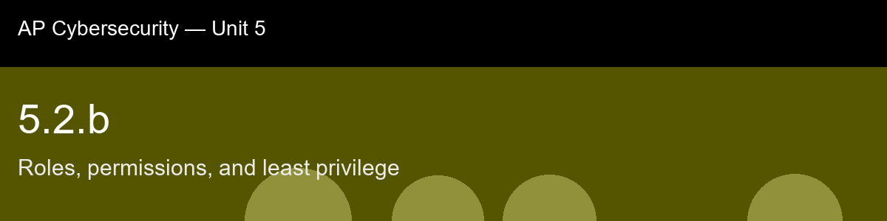

5.2.b, Roles, permissions, and least privilege
Before class today. The previous atom (5.2.a) introduced the three access control models. This skill goes one level
deeper into the model organizations use most: Role-Based Access Control (RBAC), and the design
principle that should guide every role you define, least privilege.
The intuition to hold onto: The asymmetry worth internalizing before this lecture: under-granting access is loud (someone complains immediately) and over-granting is silent (nothing breaks, nobody notices), and that single asymmetry is the entire engine behind privilege creep. It's not that organizations decide to be reckless with permissions; it's that the feedback loop is broken in exactly one direction, so access accumulates by default unless someone deliberately fights against it. Once you see privilege creep as a natural consequence of which errors get noticed rather than a failure of vigilance, the fix, scheduled role recertification, stops looking like bureaucratic overhead and starts looking like the only thing capable of counteracting a bias that's baked into how humans notice problems.
A myth worth busting before we start: "Giving extra access 'just in case' is harmless if it's never used." → Unused excess permission is exactly what increases blast radius if that account is ever compromised, it is a silent risk, not a neutral one.
Today's goal: Explain how permissions are bundled into roles, apply the principle of least privilege to evaluate whether a role assignment is over-permissioned, and identify the risks of privilege creep and excessive standing access.
Handout: pre-lecture-handout.docx.

## 5.2.b, Roles, permissions, and least privilege
**Before class today.** The previous atom (5.2.a) introduced the three access control models. This skill goes one level
deeper into the model organizations use most: **Role-Based Access Control (RBAC)**, and the design
principle that should guide every role you define, **least privilege**.
**The intuition to hold onto:** The asymmetry worth internalizing before this lecture: under-granting access is loud (someone complains immediately) and over-granting is silent (nothing breaks, nobody notices), and that single asymmetry is the entire engine behind privilege creep. It's not that organizations decide to be reckless with permissions; it's that the feedback loop is broken in exactly one direction, so access accumulates by default unless someone deliberately fights against it. Once you see privilege creep as a natural consequence of which errors get noticed rather than a failure of vigilance, the fix, scheduled role recertification, stops looking like bureaucratic overhead and starts looking like the only thing capable of counteracting a bias that's baked into how humans notice problems.
**A myth worth busting before we start:** "Giving extra access 'just in case' is harmless if it's never used." → Unused excess permission is exactly what increases blast radius if that account is ever compromised, it is a silent risk, not a neutral one.
**Today's goal:** Explain how permissions are bundled into roles, apply the principle of least privilege to evaluate whether a role assignment is over-permissioned, and identify the risks of privilege creep and excessive standing access.
Handout: `pre-lecture-handout.docx`.